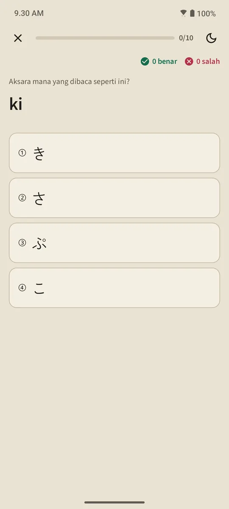

Tabel aksara sekaligus daftar pelajaran
Halaman Hiragana dan Katakana dibuka dari seksi "Dasar bahasa Jepang" di Beranda. Kartu ringkasan di atas menghitung aksara yang sudah hafal; tabel di bawahnya dibagi tiga kelompok: Dasar (46 aksara), Bertanda (dakuten dan handakuten), dan Gabungan (きゃ, しゅ, ちょ, dan seterusnya). Kotak terisi berarti Hafal, bergaris tepi berarti sedang dipelajari.

Pelajaran per baris
Tiap baris tabel adalah satu pelajaran: kotak aksara yang bisa diketuk untuk mendengar bunyinya, romaji, tanda hafal, urutan goresan tiap aksara, dan "Kata yang bisa kamu baca": kata-kata sungguhan dari kamus yang seluruh aksaranya sudah kamu pelajari sampai baris itu, dengan romaji di balik tombol supaya kamu mencoba membacanya dulu. Tombol "Kuis baris ini" menutup pelajaran.

Aturan baca
Kelompok terakhir tiap tabel menjelaskan aturan yang membuat pemula tersandung: っ kecil dan bunyi panjang di hiragana; tanda panjang ー, ッ kecil, dan gabungan serapan (ファ, ティ, ウィ) di katakana. Tiap aturan punya contoh kata yang bisa dibaca.
Kuis sepuluh soal, tanpa jadwal ulang
Kuis kana memakai tiga jenis soal: aksara ke romaji, romaji ke aksara, dan suara ke aksara. Sebuah aksara menjadi Hafal sesudah tiga jawaban benar berturut-turut, dan kembali ke Belajar kalau salah. Berbeda dengan kata dan kanji, aksara tidak dijadwalkan ulang: begitu kamu bisa membaca semuanya, tabel selesai. Ringkasan kuis menampilkan skor, aksara yang baru hafal, dan yang terjawab salah.

Mulai dari sini
Saat pertama kali membuka aplikasi, kamu ditanya mau mulai dari nol atau sudah bisa membaca hiragana. Yang mulai dari nol mendapat langkah "Kenali hiragana" sebagai langkah pertama di Beranda, lalu 20 kata pertama, pelajaran tata bahasa pertama, kanji pertama, dan latihan ujian pertama.